LOKOU🟢 Hello World
I am Biswarup, a student deeply interested in physics and astronomy. I have always been curious about space, the universe, and how things work at a fundamental level. This curiosity drives me to learn more about astrophysics and scientific concepts beyond the classroom. Alongside my academic interests, I explore technology and creative fields like digital design and art. I enjoy building small projects and experimenting with ideas, using them as a way to learn and express my curiosity. My goal is to pursue physics further and contribute to the understanding of the universe.
Realistic portrait artwork with strong attention to detail. Developed during the COVID-19 period.
Built responsive websites using HTML, CSS & JavaScript. Also explored Python through small projects.
Strong interest in physics and astrophysics with basic theoretical understanding and curiosity-driven learning.
Experience with AI tools and fundamentals of machine learning. Built real-time attention detection system using TensorFlow.js.